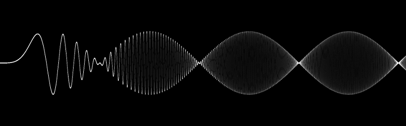
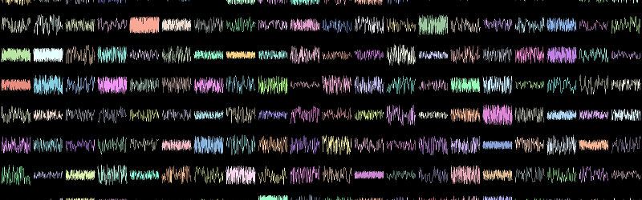

Spiral galaxy simulation
Simulation of a spiral galaxy using the density wave theory.
Check it out

High frequency signals
GPU multisampled high-frequency signal
Browse gallery

Realtime signals
320 signals with 10 000 points each
Wow!
Previous
Next
VisPy is a high-performance interactive 2D/3D data visualization
library leveraging the computational power of modern Graphics
Processing Units (GPUs) through the OpenGL library to display very
large datasets.